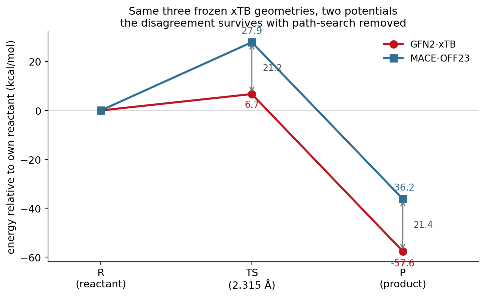
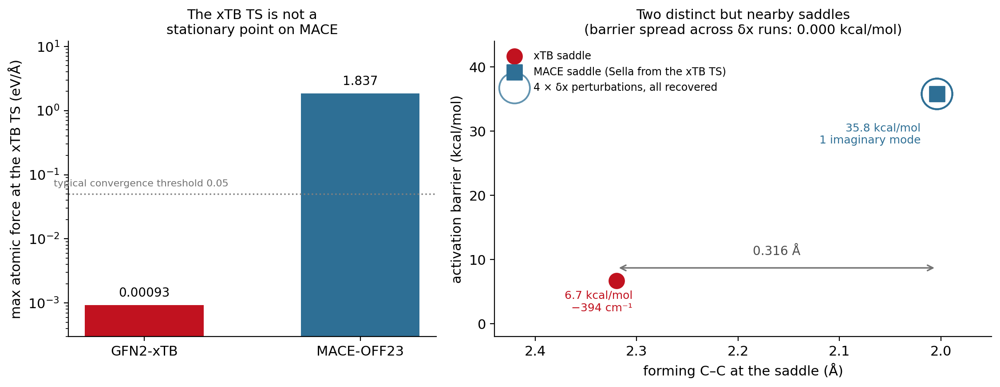

Pillar 2 — Reactive chemistry
Where the two potentials diverge: a Diels–Alder benchmark from raw energetics to cross-PES transition-state validation.
Scientific question Does the strong equilibrium agreement of Pillar 1 survive bond-breaking and bond-forming chemistry?
Why we tested it
Equilibrium water samples a smooth basin well inside any potential’s comfort zone. A cycloaddition does the opposite: it drives the system through half-formed bonds and strongly distorted geometries. If a surrogate is going to carry reactive enhanced sampling, this is the regime that decides it.
The benchmark is butadiene + ethylene → cyclohexene, chosen because GFN2-xTB gives a fully characterized reference: a concerted, symmetric transition state verified by a relaxed scan, a Sella saddle optimization, and a Hessian showing exactly one imaginary mode.
1 · Raw reaction energetics
| quantity | GFN2-xTB | MACE-OFF23 (CI-NEB) |
|---|---|---|
| activation barrier | 6.7 kcal/mol | 36.2 kcal/mol |
| reaction energy | −57.6 kcal/mol | −36.1 kcal/mol |
| TS forming C–C | 2.32 Å (symmetric) | 2.03 / 1.98 Å |

Both potentials place the transition state at essentially the same point on the reaction coordinate, and both are far apart in energy. Neither is obviously “right”: experiment and DFT put the barrier at ≈22–27 kcal/mol and ΔH ≈ −40, so xTB badly underestimates the barrier while MACE overestimates it slightly — a caveat that matters for every later pillar, where xTB is used as a convenient reference target rather than as ground truth.
2 · Mechanism and bond evolution
The disagreement is not mechanistic. Both potentials describe a concerted, essentially synchronous cycloaddition in which the two forming bonds contract together.

3 · Force agreement
On rattled reaction-path geometries the two force fields point in nearly the same direction (cosine ≈ 0.98) but differ in magnitude, and the gap is not uniform along the path.

4 · The disagreement is localized
Partitioning 152 rattled path geometries into five regions by forming C–C distance shows where the error actually lives.
| region (forming C–C) | force RMSE (eV/Å) | cosine | ΔE vs reactant (kcal/mol) |
|---|---|---|---|
| reactant basin (>2.9 Å) | 0.39 | 0.996 | 0 (ref) |
| pre-TS rising (2.4–2.9) | 0.43 | 0.991 | 8.7 |
| TS region (1.96–2.4) | 0.83 | 0.950 | 36.5 |
| post-TS (1.7–1.96) | 0.96 | 0.964 | 31.3 |
| product basin (<1.7 Å) | 0.33 | 0.997 | 23.1 |

Key result Force error rises ~2.5–2.9× in the TS/post-TS window (0.83–0.96 vs 0.33–0.43 eV/Å in the basins), the cosine drops to 0.950, and the energy discrepancy peaks in the same place. The two potentials agree where the chemistry is easy and disagree precisely where bonds are half-made.
Careful with the “why” That the error concentrates in the distorted barrier region is directly measured. The natural explanation — that such geometries are under-represented in the foundation model’s training distribution — is a supported hypothesis, not a demonstrated fact. This dataset shows where the error is, not why.
5 · Ruling out a methodology artifact
The obvious objection: MACE used NEB, xTB used its own path search, so perhaps the gap is just a path-method mismatch. Two independent tests close that off.
Test A — MACE’s barrier does not depend on the method. Across the relaxed scan (36.0), the Sella-refined saddle (36.2), and a standardized 13-image CI-NEB (36–37), MACE gives the same answer, and the NEB result is numerically converged at 35.9 ± 1.0 kcal/mol for ≥11 images.
Test B — evaluate both potentials on the identical frozen geometries. Taking the native xTB reactant, TS, and product and evaluating both potentials on those exact structures removes path search entirely.

| on frozen xTB geometries | GFN2-xTB | MACE-OFF23 | difference |
|---|---|---|---|
| barrier | 6.7 | 27.9 | 21.2 kcal/mol |
| reaction energy | −57.6 | −36.2 | 21.4 kcal/mol |
| max force at the xTB TS | 0.00093 eV/Å | 1.84 eV/Å | — |
The last row is the important one. xTB’s TS is a true stationary point on xTB’s own surface, but MACE carries 1.84 eV/Å of residual force there — nearly 40× a typical 0.05 eV/Å convergence threshold. The xTB transition state is not a stationary point on the MACE surface at all.
Method control — the standardized NEB Running both potentials through the identical 13-image CI-NEB (k = 0.5, FIRE / NEBOptimizer, fmax 0.05, same concerted-scan seed) succeeds for MACE and fails physically for xTB: the band does not form a sensible path, atoms in the “TS” images separate to 7–18 Å, and the apparent barrier balloons to 240–250 kcal/mol under both optimizers. This is an algorithm/PES compatibility problem, not a backend failure — the same xtb-python build passes a stability gate with repeat-evaluation energy scatter of 5.1e−14 eV. The valid xTB reference therefore remains the constrained relaxed scan plus verified saddle. Details in Study 04.
6 · Cross-PES transition-state validation
If the xTB TS is not a MACE stationary point, where is the MACE saddle? Using the xTB TS as a starting guess for a Sella saddle search on the MACE surface answers both that and the robustness question.

| GFN2-xTB saddle | MACE saddle (Sella from the xTB TS) | |
|---|---|---|
| forming C–C | 2.315 Å | 2.004 Å |
| barrier | 6.7 kcal/mol | 35.8 kcal/mol |
| imaginary modes | 1 (−394 cm⁻¹) | 1 |
| convergence | — | 66 iterations, fmax 8e−6 eV/Å |
The recovered MACE saddle sits 0.316 Å from the xTB one and agrees with the independently obtained CI-NEB result (35.8 vs 36.0 kcal/mol; 2.004 vs 2.005 Å) — two different methods from two different starting points landing on the same structure.
Robustness. Displacing the MACE saddle by ±0.02 and ±0.05 Å along its imaginary mode and re-running Sella from each of the four perturbed structures recovers the same saddle every time: barrier 35.806 kcal/mol in all four runs (spread 0.000) and RMSD to the reference below 1e−5 Å. The saddle is well isolated, not an optimizer artifact.
Key result The barrier disagreement is a genuine difference between the MACE and xTB potential-energy surfaces, not a path-search artifact. The two methods agree on mechanism and place their saddles only 0.316 Å apart, but those are distinct stationary points with very different energies — the xTB TS carries 1.84 eV/Å of MACE force, and MACE’s own saddle sits at 35.8 kcal/mol against xTB’s 6.7.
What we learned
Same geometry region, same mechanism, different surface. Two claims that are easy to conflate must be kept apart: nearby TS geometry and matching TS energy are separate achievements, and this system has the first without the second.
Because the error is localized rather than global, a correction does not need to repair the whole surface — only the barrier region. That is the premise of Pillar 3.